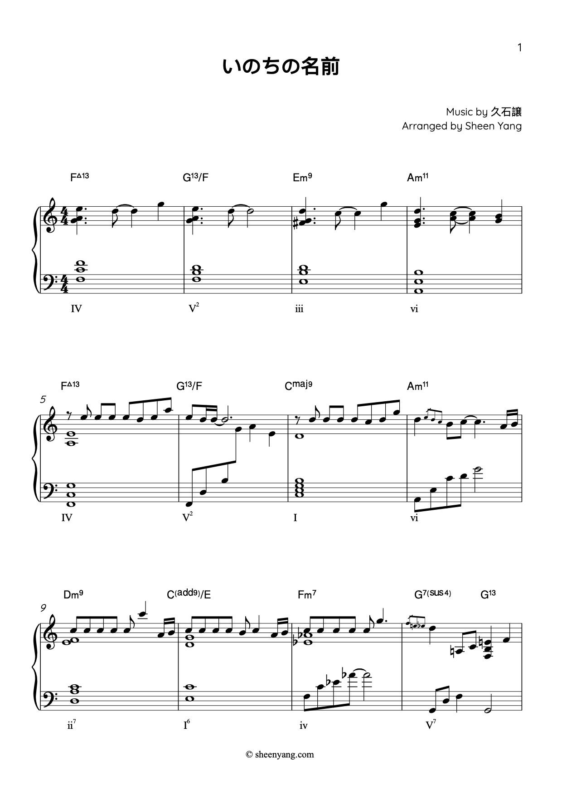

いのちの名前
生命之名 · 动画电影《千与千寻》
Inochi no Namae いのちの名前
The Name of Life · From the animated film Spirited Away
Pay by card, Apple Pay or Google Pay. The PDF is emailed to you within 24 hours of payment.
いのちの名前
アニメ映画『千と千尋の神隠し』より
カード決済・Apple Pay・Google Pay がご利用いただけます。お支払いから24時間以内に、PDF をメールでお送りします。お支払い通貨は地域により自動で選ばれます。
演奏示范
乐谱预览
乐谱第 1 页预览。完整 PDF 在付款及人工核对后通过邮箱交付。

词 · 覚和歌子
曲 · 久石让
出自 · 动画电影《千与千寻》（2001），由久石让配乐《那个夏天》（あの夏へ）填词而成的歌曲版
改编依据 · 幾田りら演唱版本（编曲：武部聡志），收录于吉卜力致敬专辑《ジブリをうたう》（2023）
钢琴独奏改编 · Sheen
微信或支付宝付款后，请提交订单信息。人工核对到账后，通过邮箱交付完整乐谱；订单提交成功不代表自动确认到账。
商品信息暂时无法加载，请刷新页面后重试。
Words · Wakako Kaku
Music · Joe Hisaishi
From Spirited Away (2001): the vocal version of Hisaishi’s theme “One Summer’s Day”
Based on Lilas Ikuta’s recording (arranged by Satoshi Takebe), from the Studio Ghibli tribute album Ghibli wo Utau (2023)
Piano solo arrangement · Sheen
作詞 · 覚和歌子
作曲 · 久石譲
『千と千尋の神隠し』（2001）より。久石譲「あの夏へ」に詞をつけたボーカル版
幾田りらの歌唱版（編曲：武部聡志、スタジオジブリ・トリビュートアルバム『ジブリをうたう』収録、2023）をもとに編曲
ピアノソロ編曲 · Sheen